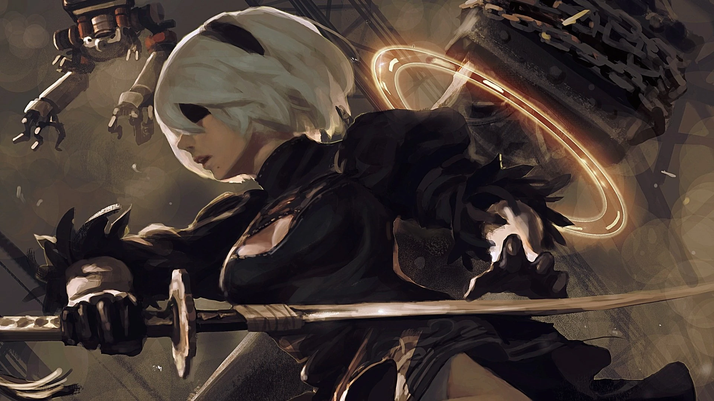
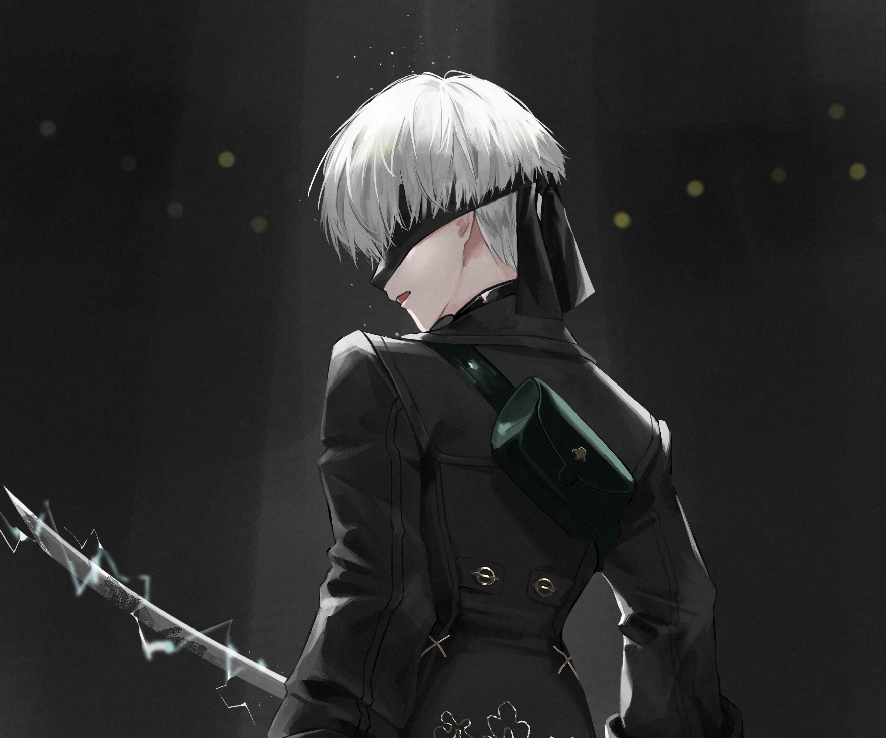
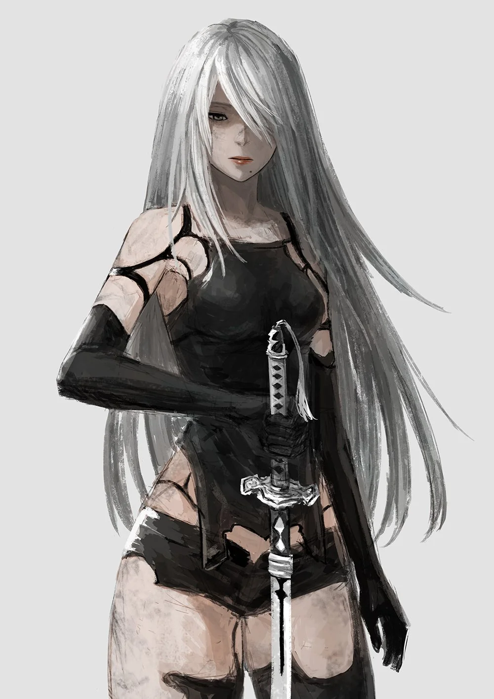
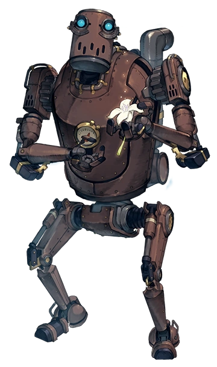

2B
YoRHa Número 2 Modelo B, o simplemente llamada 2B, es uno de los protagonistas de NieR:Automata junto con 9S y A2, siendo la protagonista de la Ruta A.

9S
YoRHa Número 9 Modelo S, o simplemente llamado 9S o Nines, es uno de los protagonistas de NieR:Automata junto con 2B y A2.

A2
YoRHa Modelo A Número 2, o simplemente llamada A2, es uno de los protagonistas de NieR:Automata junto con 2B y 9S, siendo la protagonista de la Ruta C.

Pascal
Pascal es un NPC importante en NieR:Automata que también sirve como personaje jugable temporalmente en la Ruta C.
